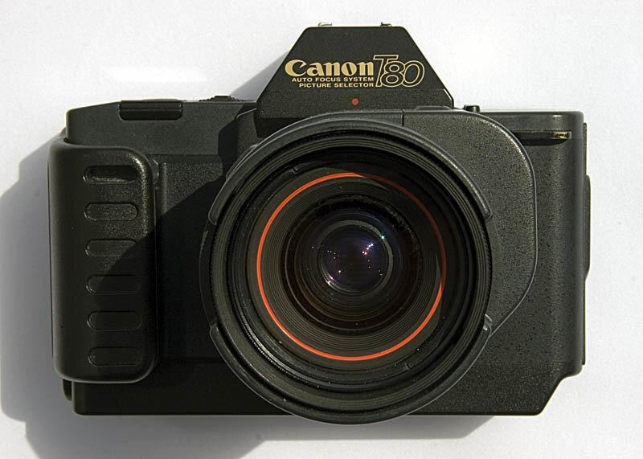
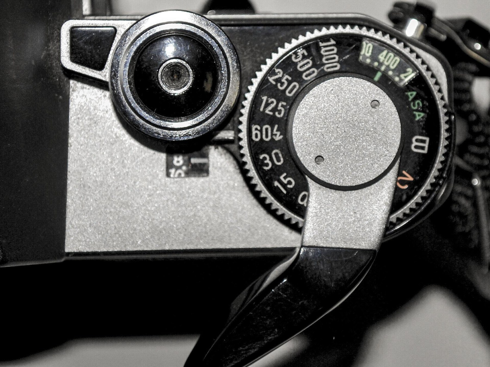
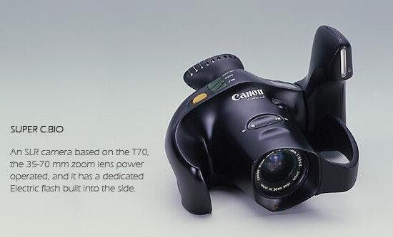
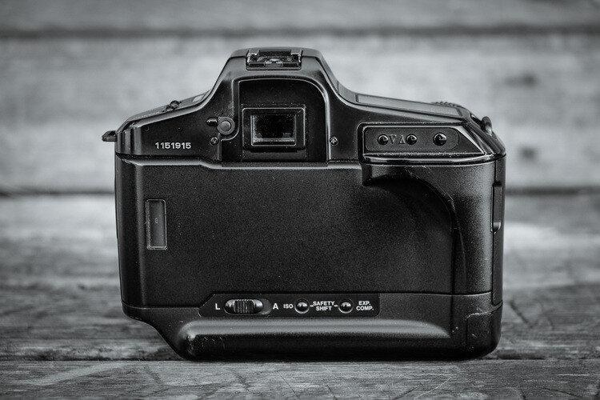
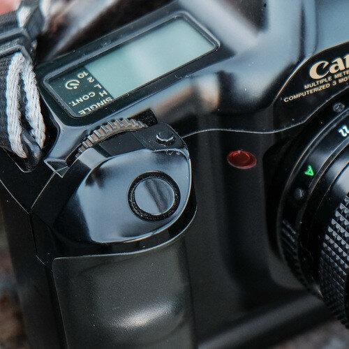
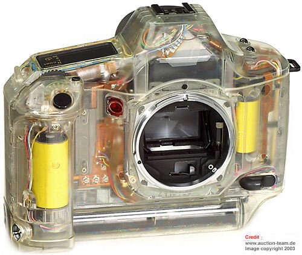
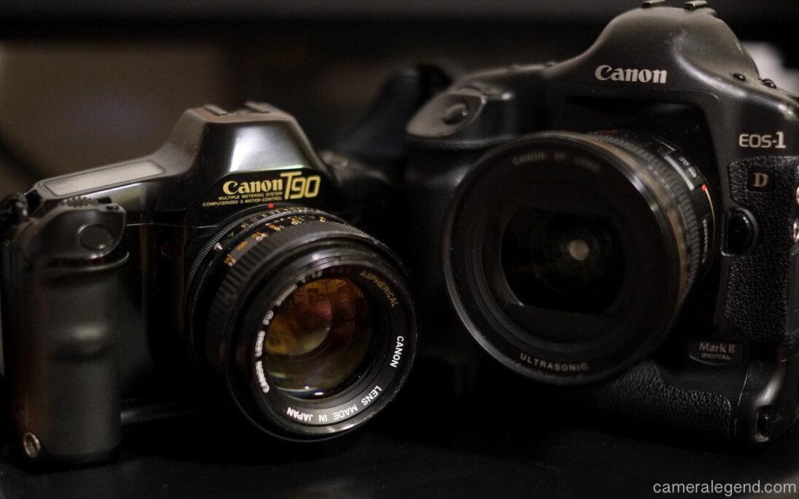
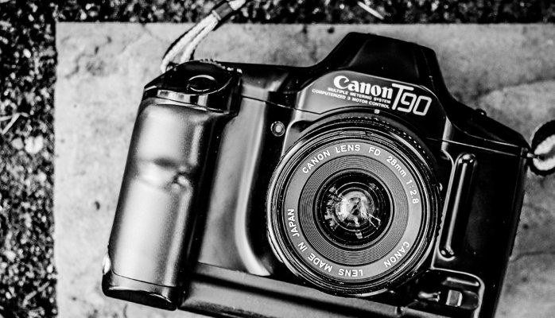

Ever wonder why SLRs today look and function the way they do?
They owe most of their look, feel, and interface to one of the most innovative cameras of all time: The Canon T90.
A combination of innovative technology, a radical designer, and flexible engineers, shaped the way we use and operate cameras for decades. The T90 unfortunately marked the end of an era for Canon’s FD mount and manual focus cameras, which were superseded by the new EOS (or Electro-Optical Stabilization) mount and system, just a year later. At the same time though, the design of the T90 pioneered the form and interfaces seen in SLRs and DSLRs even today.

Before the T90, all of Canon’s cameras were designed in-house. For the T90 however, Canon brought in radical German Industrial Designer Luigi Colani. Colani is known for his radical, futuristic, biomorphic designs. He may not be the most practical designer, but no one can fault him for lack of originality or creativity. The design team was also given far more freedom than any camera in the past.

Before this, the design and interface of cameras were dictated by the position of the mechanical elements within the camera itself. The film-advance, rewind crank, shutter release, and other controls were positioned according to their mechanical counterparts within the body. With newer digital controls, these functions were no longer mechanically linked, which allowed the designers to place them where it would make most sense ergonomically. Colani was a huge fan of ergonomic designs.

Colani presented the Canon team with a sculpted, organic form. While the previous iterations of the T-series of SLRs were blocky and angular, the ideas Colani gave them looked dynamic, futuristic, and most importantly, ergonomic. "Biodynamic" is the word Colani used to describe his style of design. Even today, 3 decades later, the T90’s design influence is visible on modern DSLRs. Colani’s ideas were refined by Kunihisa Ito, another big name in Industrial Design. He retained many of the forward thinking concepts, but in a more practical, manufacturable form. The team then used CAD modelling and CNC machining to produce the molding dies for the body. To honor his contributions to the design, Colani was presented with the very first production T90, with his name engraved in the body.

While the technology soon became obsolete, Canon retained the form, and the ideas for their future autofocus, and digital models. Nikon and Olympus also saw the importance of the design, and began incorporating the ideas into their products as well.
And for good reason. The large, sculpted grip was ergonomic, easy and comfortable to hold. The batteries lived in a slide-out sled at the bottom of the unit, which doubled as a rudimentary portrait grip. This, combined with the fact that the largest of the three motors was in the hand-grip meant that the heavy camera was easy to handle.

The top of the unit had a feature Canon introduced in the T70, an LCD Screen. As more of the functions were digitally controlled, the LCD was complemented with a large scroll wheel, just below the shutter release button. Unlike SLRs of the past, which had many knobs, each with a specific function, The T-90 controlled one function at a time, but allowed for a wide range of adjustments. This method of control is still present today, though the LCD’s have been merged with the bigger LCDs on the back of many digital cameras.
Technologically too, the T90 was advanced (for a mechanical focus camera). It had three core-less micro-motors, placed close to the functions they drove. One for winding the film, one to prepare the shutter, and one to rewind. This improved the mechanical advantage, and allowed for a fast shooting rate of 4.5 frames per second. The metering was Canon’s most advanced yet, and all modes were instantly accessible by a metering button and command wheel on the left of the camera. It also included two processors, and divided up the functions between them, running the faster processor only when required, to improve battery life. A small coin type battery allowed the processor to store settings, even when the main batteries were removed. All these electronic components were mounted on flexible circuit boards to fit around the camera’s structure and mechanicals.

All this was encased in a durable polycarbonate shell. The futuristic look, ergonomic design, and clever interface made it a hit with photographers and photojournalists. This was a camera that was designed for professionals. It was meant to be used day in and day out, and take a beating. It earned its nickname of "The Tank", by surviving long sessions, and lots of abuse. Unfortunately, the next year was the start of the auto-focus revolution, and saw the introduction of the EOS lens format, and the manual focus T90 was soon forgotten.

Still, most of the ideas pioneered in the T90 are still used today. Be it the LCD screen, the scroll wheel, the durable molded polycarbonate shell, or the ergonomic hand-grip, which today holds the Lithium Ion battery. Most modern DSLRs follow the same aesthetic, not just Canon ones, but Nikon, Olympus, Sony and many other brands as well. Colani, Ito, and the rest of the Canon team certainly left their mark on the photography world.
For more information and pictures, read Adam Richardson’s article for Mass Made Soul, as well as Wikipedia’s page on the Canon T-90. You can find more of Colani’s concepts here, and read more about Kunihisa Ito here, and the development of the T-90 here.
